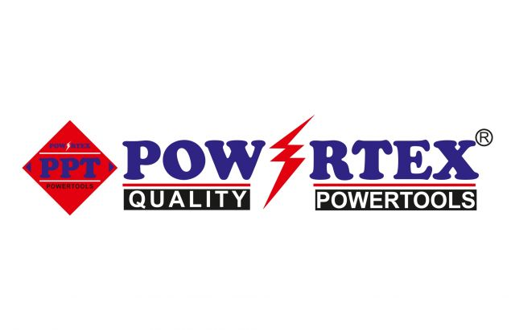

Комбо для ювелиров!! 🔥 🔥 Идеальное соблюдение пропорций, чистоты линий и надёжности — это не навык, это стандарт. Именно таким мы делаем каждый материал, который…

MITEX 2026 · Индия · Стенд 7B4A
Карточка проверена 10 ноября 2026, 09:28 · Источник ↗ · Снимок оригинальной карточки ↗
Powertex Tools — один из ведущих индийских поставщиков электроинструмента, ручного инструмента и комплектующих. Штаб-квартира и основной дистрибьюторский центр компании находятся в Хайдарабаде. Складской ассортимент включает более 100 000 компонентов, что позволяет обеспечивать оперативное обслуживание и поставку запасных частей. Широкий ассортимент, качество продукции и ориентация на клиента делают Powertex Tools надёжным партнёром для профессионалов отрасли.
Контакты 7-3-109/B/1, SY NO. 74, MADHUBHAN COLONY, GAGANPAHAD, KATEDAN Телефон: +91 9849030551 E-mail: ptcplhyd@hotmail.com Адрес: 500077, Индия, TELANGANA, HYDERABAD Веб-сайт: https://powertextools.ru/ E-mail: ptcplhyd@hotmail.com Телефон: +91 9849030551
Эти ссылки найдены при предыдущем обходе сайтов компаний. Актуальность контактов уточняйте у участника.
В доступной карточке нет видео или документов. Смотрите сайт участника.
До десяти последних сообщений каждого найденного канала. Оригинал открывается по ссылке.
Комбо для ювелиров!! 🔥 🔥 Идеальное соблюдение пропорций, чистоты линий и надёжности — это не навык, это стандарт. Именно таким мы делаем каждый материал, который…

🍂 НАЧАЛО ОСЕНИ 🍂 Вот и пролетело лето... 🍁 За окном первый день осени, а это значит, что сезон активных работ в мастерских, гаражах и…
Powertex HEPHA- инструменты и станочная оснастка pinned a photo


Измерительный прибор для измерения внутреннего диаметра отверстий до 15 мм 📐 📏 Производство Индия Материал нержавеющая сталь Цена 500 рублей 🔥 🔥

☀ ПРОВОЖАЕМ ЛЕТО – ЛЕТНИЙ SALE ДО 50%! 🏷 🔥 Друзья, лето подходит к концу, и мы говорим ему: "СПАСИБО ЗА ТЁПЛЫЕ ДНИ, НО МЫ…


⚙ ОДНОРОЛИКОВАЯ ДЕРЖАВКА ДЛЯ НАКАТКИ – ПРЯМОЕ РИФЛЕНИЕ С ШАГОМ 1,0 ММ Друзья, представляем однороликовую державку для накатки рифлений – простой и надёжный инструмент для…


🌀 НАКАТНЫЕ РОЛИКИ POWERTEX HEPHA – ДОБАВЬТЕ ТЕКСТУРУ, ГДЕ ХОТИТЕ! 🌀 Друзья, встречайте универсальные наборы по 3 накатных роликов с крупным, средним и мелким шагом…


Ручной мини-гибочный станок для гибки металла Мини-гибочный станок для металла, изготовленный из закаленной инструментальной стали, представляет собой компактный и универсальный инструмент для гибки…


Набор фрез 8мм Powertex набор 12шт 👉 Набор фрез по дереву 12 шт кромочные, пазовые, для фасок хвостовик 8 мм Powertex в деревянном боксе. 👉…


Наш бестселлер 💥 ОПОРНЫЕ ТАРЕЛКИ! Представлены в трех размерах: диаметром 25,50 и 100 мм 🌟 •Максимальные обороты (об/мин): 12500 • Максимальная скорость (м/с): 80 •…